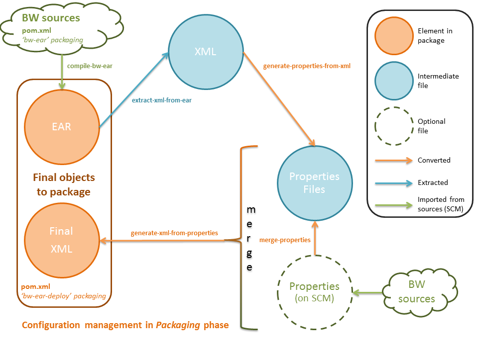
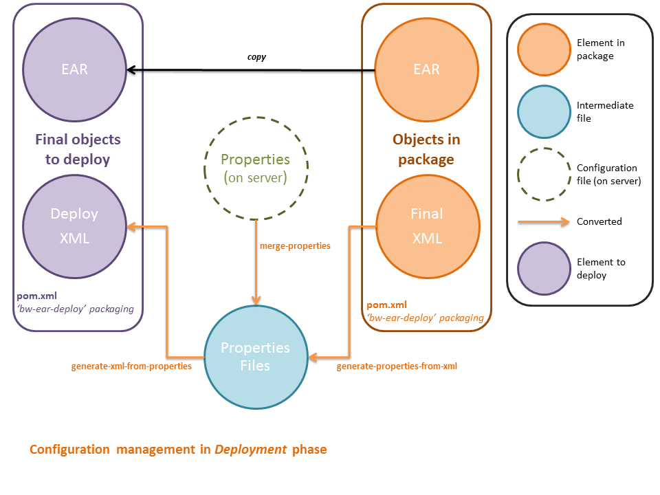

For a TIBCO BusinessWorks project, the packaging is the step that comes right after compilation of the EAR and unit tests.
In fact, deploying a TIBCO BusinessWorks EAR implies to create a Deployment Descriptor XML file.
Moreover, the packaging step will provide an exclusive syntax to simplify the configuration of TIBCO BusinessWorks applications. To achieve this, the previous XML file will be converted to properties files that will be easier to edit.
The scope of this page is to describe the files generated by the packaging phase for one TIBCO BusinessWorks project and explain their use in the next phase: deployment.
The generation of a full compressed package with the maven-assembly-plugin is out of the scope.
The Deployment Descriptor in TIBCO (not necessarly BusinessWorks) is an XML file with a root element called <application> based on a schema with http://www.tibco.com/xmlns/ApplicationManagement namespace.
<?xml version="1.0" encoding="UTF-8"?>
<application xmlns="http://www.tibco.com/xmlns/ApplicationManagement" name="MyBWProject">
...
<NVPairs name="Global Variables">
<NameValuePair>
<name>Connection/JMS/Port</name>
<value>7222</value>
</NameValuePair>
</NVPairs>
...
<services>
<bw name="MyBWProject.par">
<enabled>true</enabled>
<bindings>
<binding name="MyBWProject-1">
<machine>10.8.0.1</machine>
...
</binding>
</bindings>
<NVPairs name="Runtime Variables">
<NameValuePair>
<name>Connection/JMS/Port</name>
<value>7223</value>
</NameValuePair>
</NVPairs>
...
<bwprocesses>
<bwprocess name="JMSInput.process">
<starter>JMS Queue Receiver</starter>
<enabled>true</enabled>
<maxJob>0</maxJob>
<activation>true</activation>
<flowLimit>0</flowLimit>
</bwprocess>
...
</bwprocesses>
<isFt>false</isFt>
</bw>
</services>
</application>In the world of exploitation teams, the standard mechanism to configure a system is to edit (most likely in vi editor) plain text files with key=value properties. These files are called properties-based configuration files.
However the TIBCO Deployment Descriptor is XML-based. That’s why this plugin will convert the XML Deployment Descriptor file extracted from the TIBCO BusinessWorks EAR file to properties-based files:
Each key=value line of a “.gv.properties” file is the representation of a <NameValuePair> element with a subelement <name> corresponding to the key and a subelement <value> corresponding to the value. For instance:
Connection/JMS/Port=7222Each line of a “.services.properties” file is composed of a key which has a XPath-like syntax to define element in the TIBCO Deployment Descriptor, relatively to te <services> element.
This syntax will basically be:
<element-name>[@name]/<sub-element-name>/<sub-sub-element-name>=<value>For instance:
bw[MyBWProject.par]/bindings/binding[MyBWProject-1]/machine=10.8.0.1
bw[MyBWProject.par]/bindings/variables/variable[Connection/JMS/Port]=7223
bw[MyBWProject.par]/bwprocesses/bwprocess[JMSInput.process]/starter=JMS Queue Receiver
bw[MyBWProject.par]/bwprocesses/bwprocess[JMSInput.process]/enabled=true
bw[MyBWProject.par]/bwprocesses/bwprocess[JMSInput.process]/maxJob=0
bw[MyBWProject.par]/bwprocesses/bwprocess[JMSInput.process]/activation=true
bw[MyBWProject.par]/bwprocesses/bwprocess[JMSInput.process]/flowLimit=0If an element with the name between bracket doesn’t exist, it will be created on-the-fly. Thus, it is possible to create new bindings dynamically in the properties-based files. This custom configuration will be put back into the TIBCO Deployment Descriptor.
Now that we have described all the files generated during the packaging phase for one TIBCO BusinessWorks application, we will see how these files interact before the package is ready to be deployed.
The configuration management lifecycle has to address a main issue: synchronize actions of development team and operations team (see DevOps wikipedia article for details).
This plugin defines a comprehensive strategy aimed at clearly separating concerns between build time and deployment time:
Once the packaging step we have three files that will be used by deployment step :
There are also three more files for reference purpose only:


The important point to notice is that properties files can be edited before deploying the application. This last configuration edition will be included in the XML before deploying the EAR to TIBCO Domain.
This will be further explained in the Deployment phase.